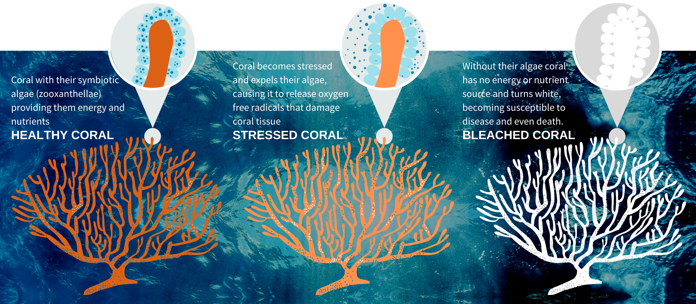

Reef Overview
Find out about coral reefs and our study.

Bleaching events are occurring more frequently, at stronger intensities, and are having significant ramifications for the structural complexity of coral reefs. This is because climate change is leading to more profound changes in the physical ocean environment which leads to bleaching (Douglas, 2003). Coral bleaching refers to when corals expel their symbiotic algae, called zooxanthellae, leading to the coral turning white. Corals expel their algae when they become stressed (most commonly thermal stress) causing the zooxanthellae to release oxygen free radicals that damage coral tissue. Since the corals rely on the zooxanthellae for energy and nutrients, when the zooxanthellae is lost the corals turn white and are referred to as ‘bleached’. If stress conditions, such as temperature, do not return to normal conditions, zooxanthellae will not return and coral will transition from bleached to dead coral. We are researching coral bleaching for as part of an interdisciplinary study at the University of Sydney. We aim to investigate if coral reef diversity, rugosity and sea surface temperature anomalies (STTA) are correlated with frequency and severity of bleaching events. This will allow us to create a model which predicts coral bleaching and can help scientists prioritise which reefs are likely to be suspectable to bleaching in the future.
The reef data containing the bleaching, diversity, sea-surface-temperature anomaly (SSTA), and depth metrics comes from a public dataset taken from the paper "A global analysis of coral bleaching over the past twodecades" by Sully et al. (2019). The paper contains coral bleaching events at 3351 sites in 81 countries from 1998 to 2017. The raw data can be found at the Reef Check website or on the GitHub repositoryfor the Institute for Global Ecology.
We also used data gathered from Allen Coral Atlas to build our rugosity dataset. Full extraction method can be found here. The files extracted contained the Geomorphic Map data that was in the shape files labelled geomorphic.gpkg or .geojson. From investigation of the data sets on the map, it looked like the reef dataset is not as precise as the Allen Coral dataset. As such, we decided to keep only the points from the Reef dataset that fell within the polygons of Allen Coral Atlas to limit uncertainty.